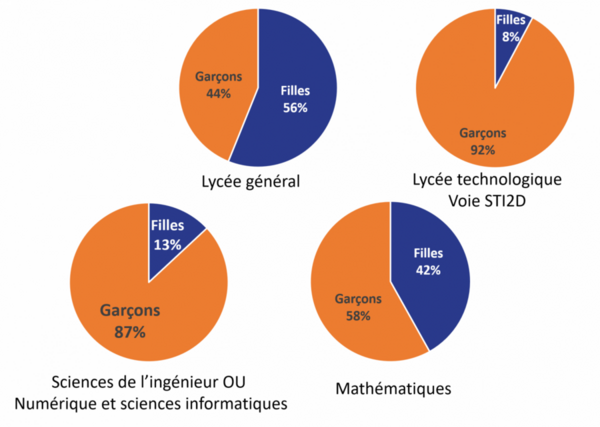

Ici, vous découvririez un site centré sur la thématique : Les femmes dans l’informatique. Nous avons choisi de vous présenter 3 femmes qui ont marqué leurs époques par leur ingéniosité. Vous pourrez en apprendre plus sur leur vie et gagner en culture générale. Vous découvrirez également l’histoire du prix Turing, souvent considéré comme le "Prix Nobel de l’informatique", ainsi que certaines des femmes remarquables qui l’ont remporté. Enfin, nous vous proposons un quiz instructif sur les inégalités entre les sexes dans le domaine scientifique.
En tant que jeunes filles passionnées par l’informatique et élèves en spécialité NSI, nous sommes particulièrement concernées par la question de la représentation des femmes dans ce domaine. Trop souvent, les contributions des pionnières et informaticiennes sont passées sous silence, effacées des récits historiques. Pourtant, leur impact est immense. À travers ce site, nous souhaitons leur rendre hommage et mettre en avant leur rôle dans l’évolution du numérique.
Mais au-delà de l’informatique, nous souhaitions aussi aborder un sujet plus large : les inégalités entre les hommes et les femmes. Bien que les droits des femmes aient considérablement progressé, l’égalité est encore loin d’être atteinte. Par exemple, en France, le droit de vote des femmes n’a été accordé qu’en 1944, alors que dès la IIᵉ République, tous les hommes pouvaient voter. De même, jusqu’en 1965, une femme mariée ne pouvait ni travailler, ni ouvrir un compte bancaire, ni signer un chèque sans l’autorisation de son mari.
Dans le domaine scientifique, les inégalités persistent. Les femmes sont largement sous-représentées dans les métiers techniques. Nous pouvons remarquer qu’elles sont plus rares dans les métiers purement techniques comme l'informatique et les systèmes d'information (36 % des femmes contre 57 % des hommes exerçant une profession du numérique), ou encore dans les métiers des télécoms et infrastructures réseaux (3 % des femmes contre 10 % des hommes).

Nous encourageons, chaque fille, chaque femme, chaque nana, chaque meuf, à s’essayer dans les matières scientifiques sans craindre la difficulté ni l’omniprésence des hommes. Chacune d’entre elles est capable d’accomplir ses objectifs, d’innover et d’exceller. Peu importe les stéréotypes ou la sous-représentation, chaque fille, chaque femme, chaque nana, chaque meuf a sa place dans ce domaine. Alors osez, expérimentez, et surtout, croyez en vous